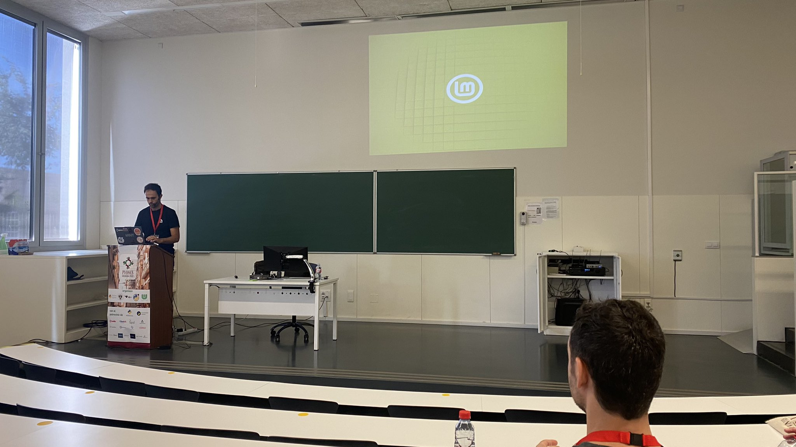
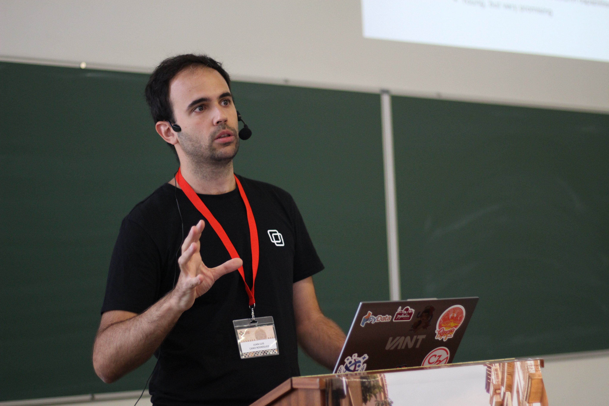

¡A por el primer dÃa de charlas de la #PyConES22! ¿Tengo sueño? No tengo sueño.

¡Arrancan @fergunet y @Jimena_y_yo presentando la #PyConES22!
RT @maidotgimenez: La pysidenta abriendo la #PyConES22
RT @fsalamero: 9 años desde la primera, pero se sienten como 100, ¡tanto hecho y lo que viene! Empezamos #PyConES22
RT @draxus: Comenzamos el segundo dÃa de @PyConES de la mano de @Jimena_y_yo y @fergunet #PyConES22
RT @muheuenga: @PyConES is happening. They have a whole track in English. @juanluisback update us please. All the best #PyConES22 🇪🇸🇪🇸🇪🇸🇪🇸
Replying to @muheuenga and @PyConES
Thanks a lot @muheuenga! 🙌🼠Get ready for the tweetstream! 😊
RT @PyConES: ¡Nos enorgullece tantÃsimo tener a @nieves_as
como Keynoter en esta #PyConES22!
En el paraninfo ahora mismo: "Inteligencia Art…
Replying to @juanluisback
Y ahora la keynote de @nieves_as sobre Python conversacional en #PyConES22
Replying to @juanluisback
Sigue @quierodata hablando de MLOps con @MLflow en #PyConES22
Replying to @juanluisback
Aquà @quierodata haciendo demos en directo con toda la tranquilidad del mundo, ole y ole #PyConES22
@sailormerqury ¡Hola! Te he visto por la PyConES, me encantarÃa preguntarte algunas cosas sobre la organización de la T3chFest si me pudieses prestar 5-10 minutos de tu tiempo. Te estoy siguiendo por si quieres que cuadremos por MD. ¡Gracias!
@alipeji Me preguntan si vas a compartir las diapositivas de tu charla ayer en Django Girls, que causó sensación 😊
La gran @maidotgimenez hablando sobre todo lo hay que quemar en la inteligencia artificial en #PyConES22
Replying to @juanluisback
El 72 % de los currÃculums nunca los lee un humano 😳
RT @alabarga: The Dataframes Charming Quadrangle, alternativas a #pandas en la #PyConES22 con @juanluisback
RT @coloratto67: Una charla súper interesante con @juanluisback sobre Pandas y sus alternativas. #PyConES22 @PyConES

RT @NataliaDiazRodr: Natural evolution of Pandas #PyConES22
Replying to @masmayer
¡Hola @masmayer, muchas gracias! 😊 Encuentro que manejar dataframes de más de 1 GB ya hace que merezca la pena usar Dask - para evitar que los resultados intermedios desborden la RAM y también para ahorrar tiempo. Salvo que tengas 1 TB de RAM claro 😇 ¡Espero que te sirva!
A punto de empezar @pyblogsal sobre cómo hacer CPython más rápido en la #PyConES22
Replying to @soyparrilla and @PyConES
Nos ha pillado desprevenidos a los del último tren para Madrid :(
Ya en casa tras la #PyConES22. He tuiteado poco y hablado mucho (hasta quedarme sin voz). Lo mejor: la calidez de @python_granada, las charlas de @pyblogsal, las conversaciones con @quierodata y @sailormerqury, y el equipo @PyDataMadrid. ¡Nos vemos el año que viene en Canarias!

Replying to @MIsGArenas, @python_granada, @pyblogsal, @quierodata, @sailormerqury, @PyDataMadrid, @CanalUGR and @OSLUGR
No me cabÃan más menciones pero claramente sà ♥️
Replying to @cloudingio and @genbeta
"Yo usaba Clouding antes de que fuese cool" ğŸ˜
Dear #Hacktoberfest2022 participants:
Stop leaving terse "Can I work on this?" comments in issue trackers.
*How* do you plan to tackle the issue? *When* do you plan to work on it? *What* do you need from the maintainers that you couldn't figure out?
Signed,
All maintainers.
Replying to @juanluisback
Replying to @dimmonsnet, @barcelonactiva, @goteofunding, @XES_cat, @CanBatllo, @sortirambnens, @donesenxarxa, @setemcat, @fablabbcn, @pamapamcat, @el_lokal and @opcions
Me encanta esto, ¿cómo podrÃamos traducirlo al castellano para hacer una evaluación parecida con otras organizaciones del Estado? Por ejemplo las que pertenecen al @MES_Madrid
Replying to @juanluisback
I remembered now that this has a technical term coined by @brainwane: "cookie licking" 🍪👅 or, less colloquially, territoriality https://producingoss.com/en/producingoss.html#cookie-licking
Replying to @juanluisback
Aquà un poco de evidencia empÃrica: https://www.chemistryworld.com/careers/when-scientific-conferences-went-online-diversity-and-inclusion-soared/4015040.article
@commitconf De esto hablaba el otro dÃa. Que 10 personas se junten en un bar y digan "no hace falta hacer eventos hÃbridos" es sesgo de autoselección.
No digo que haya que hacerlos, digo que como mÃnimo hay que reconocer que se queda gente fuera. https://twitter.com/kirstie_j/status/1577231495504179200
Replying to @PyConES, @emibarrod and @python_es
Hay cosas que nunca cambian 😂 https://twitter.com/__troll__py/status/668042013401550848
Replying to @MSF_Espana
¿Cómo nos enteramos de las próximas ediciones? 🥺
RT @readthedocs: New feature: auto-cancelling builds when pushing to the same branch twice. Our blog post talks about the benefits, includi…
Replying to @yuvipanda
Could have been a Jim Steimman song
I scanned the #AlphaTensor paper really quickly, and it's fascinating! Some personal highlights (short 🧵) https://twitter.com/DeepMind/status/1577677899108421633
Replying to @juanluisback
"In contrast to two-dimensional matrices [...], finding low-rank decompositions of 3D tensors (and beyond) is NP-hard [...]. In fact, the search space is so large that even the optimal algorithm for multiplying two 3 × 3 matrices is still unknown." 🤯 #AlphaTensor
Replying to @juanluisback
Figure 3 is key: it compares the complexity of previously known matrix multiplication algorithms and the ones discovered by AlphaTensor. The AI has re-discovered most optimal known algorithms, and improved the rank of a few more.
Replying to @juanluisback
#AlphaTensor has also improved on some specific cases, for example "multiplying an n x n skew-symmetric matrix with a vector of length n". The state of the art was ~n2 multiplications, and now it's ~1/2 n2 🏎️
Replying to @juanluisback
And finally, #AlphaTensor has also managed to tailor matrix multiplication algorithms for specific architectures, such as GPUs and TPUs!
Replying to @juanluisback
Read the paper for yourself at https://doi.org/10.1038/s41586-022-05172-4, experiment with the code on https://github.com/deepmind/alphatensor, and keep sharing the knowledge ✨
RT @potatoffel: @juanluisback One caveat: "optimality" is here purely defined in terms of throughput, but there are other considerations th…
Hey @PyConLT, did the "`int` is to `list` as `float` is to `tuple`" talk by @dontusethiscode got recorded? Or maybe James has given it at some other event and can point to a recording online? ğŸ˜
TIL: The "step" or "stride" argument of slices "was added to Python at the request of the developers of Numerical Python"
https://docs.python.org/3/whatsnew/2.3.html#extended-slices
Replying to @read_the_code
Te comprendo perfectamente...
Did you know that I publish a weekly newsletter with the latest news of the #PyData and #SciPy ecosystems?
This week we talk about #AlphaTensor, new versions of @condaproject, mamba, and @DataPolars, uncertainty quantification and explainable AI, and ➕!
https://astrojuanlu.substack.com/p/episodio-50
Replying to @juanluisback
...it's in Spanish though 😇 but I heard from some readers that automatic translators do a good job these days!
Would you like to read it natively in English? Leave a comment 👇🏼
Replying to @juanluisback
More https://mobile.twitter.com/dbrgn/status/1572860327347331072
Replying to @gebarnett1002
😠Sure thing, let's have a chat! Feel free to email me at hello@juanlu.space
Just upgraded https://astrojuanlu.github.io/mystyc/ to @pyscript_dev 2022.09.1 😠https://twitter.com/JeffersGlass/status/1575940781516673024
Replying to @swyx, @github, @GoogleColab and @huggingface
We all know @GoogleColab will very soon stop being free, following the trend of other @Google products being archived, watered down, or having more restricted or nonexistent free tiers.
Replying to @AppRadarCovid
La app llegó tarde y mal, las CCAA lo integraron en sus sistemas de salud tarde y mal (hola Madrid), y conseguir los códigos era tarea imposible. Fracaso absoluto que nos retrata como paÃs.
Replying to @choldgraf, @swyx, @github, @GoogleColab, @huggingface and @Google
Great one, I think I read it one of the previous times you shared it 😅 But people don't seem to get the memo...
This is an appreciation tweet towards @ChannelTools_io 💕 #SlackTips
Replying to @vlk_ykn and @DelegacionAero
Como co-autor de @AeroPython, secundo la pregunta 🙃
Replying to @HeidiBaya, @RSE_Asia, @RSE_de, @nl_rse, @ResearchSoftEng, @nordic_rse, @rse_be, @us_rse and @RSESquirrel
This thread is full of excellent recommendations!
RT @orchestofficial: Check out Data Overload Vol. 14, the latest edition of our monthly newsletter! ⚡
https://mailchi.mp/0a4ed35a07c3/orchest-in-2022-data-overload-vol-15502401
Highlights:…
Replying to @luixer_
Ahora se está dando el efecto opuesto: a mayor exploración cientÃfica del espacio ➡️ más validación a la idea de emigrar de planeta es la solución a la emergencia climática (no hay más que leer a los fans de El*n M*sk)...
Replying to @luixer_
Yo hace un mes hablé con un señor que estaba financiando un proyecto para tapar el Sol... No sé si es una minorÃa pero tienen muchos recursos. En todo caso, soy pesimista porque estaba sobreexpuesto trabajando en el sector, ojalá tengas razón y solo sea un efecto óptico ☺️
Replying to @i_aguerri
¿*Creo* que puedes pasar con el DNI? Aunque nunca sé bien cómo quedó la cosa post-Brexit...
Replying to @i_aguerri
Bueno saberlo, y menos mal que encontraste alternativa. ¡Buen viaje!
RT @PyDataMadrid: Ya está abierto el registro para nuestra reunión de octubre: 🛫 Julia y Python para optimización en aerolÃneas, con charla…
RT @aeroespacialUPM: Dos nuevas propuestas de la #EscueladeOtoño de
@OngawaUni, en torno al cambio climático y el ecofeminismo.
🔹 "Esto Ar…
Replying to @aeroespacialUPM, @OngawaUni, @DelegacionAero and @La_UPM
Muy alineado con la #EscuelaActivismoEconómico y el trabajo de @MES_Madrid, @Ecooo_, y otras entidades 💪🏼
Who can guess, without looking, in which open source project did I find this gem? 👀
Replying to @StalwartCoder
Replying to @Captain_Joannah
Wow, that's just terrible and I'm sorry it happened to you. Did they ever give any justification for it?
Replying to @saurabhchopraa
Looks like graindb took that code from somewhere else...!
RT @remoquete: As tech writers, we journey through different levels before getting to the core of what a product really is and does. The cl…
Feliz DÃa del Respeto a la Diversidad Cultural a Argentina 🇦🇷
Feliz DÃa de la Nación Pluricultural a México 🇲🇽
Feliz DÃa de la Interculturalidad y la Plurinacionalidad a Ecuador 🇪🇨
Feliz DÃa de la Diversidad Cultural a Uruguay 🇺🇾
#12Octubre
Replying to @luixer_
https://mobile.twitter.com/juanluisback/status/1580089880415129600
Replying to @chrisjrn
I saw those and I felt incredibly conflicted too ğŸ˜
Replying to @muheuenga
The way I see it, getting a job as a junior is harder than advertised. Few companies are investing the resources to train folks with 0-2 years of experience. Then when you pass that barrier, you're flooded with offers.
Replying to @muheuenga
Yes. Which is appealing to a certain degree, but the lack of focus hinders progress and learning in my opinion. You are not becoming a better software engineer, you are becoming a startup founder 😂
Replying to @DafneCalvo
Parafraseando a @pablom_m, "su paÃs cabe en un contenedor de basura"
RT @orchestofficial: We created a #NormConf Twitter list so you don't have to! Follow all the speakers here, including those giving lightni…
Replying to @CommonFateTech
Where is "git is a database"? 🙃
Nice combo Mr Zuck
RT @PyConNA: We are excited to officially announce the eighth edition of PyCon Namibia. The preliminary dates for PyCon Namibia is 21th-23t…
Replying to @muheuenga, @cheukting_ho, @evildmp and @AdamChainz
😂 I have no choice but to obey! 💪🏼
Replying to @mari_meir
(replying with a GIF because I'm a boomer)
Replying to @davidism and @hynek
If you read the issues referencing this one https://github.com/readthedocs/recommonmark/issues/221, you can see that ~dozens of projects all agree that the transition was mostly automatic and painless. Just https://github.com/executablebooks/rst-to-myst and go
Replying to @ecanrog
Ya he visto varias menciones al "debate colapsista" hoy, ¿me he perdido algo en Twitter esta semana? ¿O no viene a cuento de nada particular?
RT @MadridRepair: FELIZ REPAIR DAY!
Quedáis todas y todos invitados al Repair Day que @MadridRepair celebra este año en @mataderomadrid.
#R…
Replying to @Recuenco, @cesarastudillo and @Gonzalomartin
No sé cómo no he descubierto estas turras antes pero que me las inyecten en vena
RT @marcan42: Don't do this. Ever. This is insulting and disrespectful to your users.
Nobody is entitled to support from volunteer FOSS pr…
RT @michaelwaskom: Matplotlib rcparams let you define custom styles with nearly unbounded flexibility, but the docs do not make the various…
RT @marcan42: The reaction to this has been extremely polarized. I can't say I'm surprised, but it really cements in my mind that there are…
RT @marcan42: Caring about your users does *not* mean "the user is always right", nor "I must do everything users tell me to do". It means…
Ayer en el #RepairDay con @MadridRepair en @medialabMM conseguimos arreglar el hervidor 😊
RT @humane_tech_now: What do you prefer?
Sunday thought: how is it possible that the Netherlands is such a massive open source powerhouse, being a comparatively small country? Lots of projects (old and new) I follow were created there. It's so inspiring ♥️
(Tweet triggered by @humane_tech_now)
I'm actually enjoying some conversations on the #fediverse these days.
@joinmastodon UX is reaching the ~okay threshold. Meaning: there are obvious flaws, but it's palatable.
I'm on a stable instance that seemingly won't go away anytime soon.
Follow me! https://fosstodon.org/@astrojuanlu
Replying to @mathladyhazel and @mrm8488
¿Cómo puedes retuitear esto? Me sangran los ojos 😂
Replying to @JaimeObregon
Mamita querida 😂
Replying to @Recuenco
Yo creo que la mayorÃa de tecnocenizos no tienen miedo a Terminator (que, a la luz de este y otros ejemplos, parece que va a tardar todavÃa un tiempo), sino de algo mucho más sutil. https://twitter.com/civio/status/1570329339866087427
Replying to @carrero, @alvaroalegriam and @martinvars
Lleva yéndose de España años 🤷🏼‍♀️ https://twitter.com/TostadaEnPolvo/status/1303191418605916161
Replying to @MadridRepair, @schcriher and @medialabMM
Yo creo que @schcriher estarÃa más bien a 10 000 km de distancia 😅
Replying to @lalalalia
🔔 @InquilinatoMad 😉
RT @PyData: Follow this list to have one stop for the PyData chapters and major people in our community! https://twitter.com/i/lists/232805913
Replying to @humane_tech_now
https://twitter.com/braaannigan/status/1579753862592069632
RT @pyscript_dev: Tomorrow (Oct 18th) at 11AM CST, we are hosting a PyScript Community Call.
Details: https://github.com/pyscript/pyscript/issues/836
Replying to @mmngreco
```
$ pip install flit
$ flit init
```
RT @graphext: We have listened to you, and here you go!✨We are happy to announce that, from today, you can upgrade your capabilities direct…
tfw you search the error message, find the source code that originates it, and right before there's a comment that says
// Should not happen
https://github.com/apache/arrow/blob/cd33544533ee7d70cd8ff7556e59ef8f1d33a176/cpp/src/arrow/csv/reader.cc#L266-L267
Replying to @juanluisback
Let's see how this goes https://issues.apache.org/jira/browse/ARROW-18084
Replying to @juanluisback
`parse_options=ParseOptions(newlines_in_values=True)` and 🏎️🏎️🏎️🏎️🏎️
Replying to @mozthunderbird
Because it's the only calendar client that works decently on Linux (plus it reads email 😉)
Now seriously, I love it!
Replying to @emollick
Humans can extrapolate, machine learning/AI can't (nowadays). Creative interpolation might look like innovation in the same way that "advanced technology is indistinguishable from magic".
Under a narrow definition, "we are *just* atoms".
Replying to @mmngreco
For more info... :) https://www.youtube.com/watch?v=OeOtIEDFr4Y
Replying to @pakitochus, @python_es and @PyConES
¡Hola! ¿Queréis subirlo al tablón de empleo de @python_es? https://comunidad.es.python.org/c/empleo/9
Replying to @limites1972
Hilazo ğŸ‘🼠Y deseando leer ese sobre el gran peligro
RT @limites1972: 1/ Tecnooptimismo es la creencia en que la ciencia, la tecnologÃa y el ingenio humano solucionarán el atolladero energétic…
Replying to @PedroFresco and @DNV_Group
Gracias por compartir, ¿se puede consultar online?
RT @python_es: Las comunidades locales están a tope. Aquà los próximos eventos en Octubre:
- Madrid (https://mobile.twitter.com/PyDataMadrid/status/1579838261216030726)
- Málaga (htt…
RT @luis_in_brief: @McCoySmith @mala (Of course, not the first or last revolutionary movement to, over time, conflate and confuse the origi…
RT @ThePSF: Join the official Python Developers Survey 2022 and win valuable prizes! ✨ https://surveys.jetbrains.com/s3/c1-python-developers-survey-2022
Replying to @VCNTBNB, @JaimeObregon and @tarugoconf
Efectivamente hay mucho talento pero poca humanidad y empatÃa, cualidades que brillan en @JaimeObregon. Tenemos mucha suerte de tener a alguien como él.
Replying to @mattdlockyer and @ekuzyakov
The specs contain many interesting ideas that are not present in Mastodon. But you have to read them ;)
RT @Cyclical_invest: @packyM The problem with $META is not the metaverse, even if this is not appealing either
It's that its initial propo…
I will be very clear: I'm bored to death about all the commentary on the #metaverse. I fail to see how a huge virtual mall addresses *any* of the huge challenges we have as a human species *right now*.
What's more: I see perverse incentives all around.
Replying to @juanluisback
"Forget about your burning planet, your terrible house, your miserable life! Turn on your oxygen machine & AC, get into the metaverse, and relax".
Seriously, didn't we learn anything from science fiction?
With the track record of Meta, can we be surprised if we get *the worst*?
Replying to @iggy_knights
I have to!
RT @RiddleMeSmit: @AlexBlechman Cyberpunk: The bright lights and shiny tech is to distract you from the atomisation of your community and t…
RT @mervenoyann: some tips if you want your pull requests to open-source repositories to be merged (fast ğŸ˜) 🧵
Replying to @juanluisback
Everybody is liking this tweet and embarrassing me because of my terrible English
Replying to @dkwiens
And as a result, really improductive
Replying to @brunosan
It's a thought-provoking question, but I will leave others the luxury of thinking how a properly governed Metaverse can (quickly) bring us an economic system that is compatible with the limits of the planet.
For now, my stance is that those billions could have had a better use.
Replying to @joaquinmencia and @Recuenco
¿Quién no entiende nada? Creo que todos entendemos lo que significa que a alguien le ofrezcan mucho dinero
RT @Recuenco: @juanluisback @joaquinmencia Lo que no se entiende es que la gente tenga esta mierda de arquitectura de incentivos.
RT @mmngreco: @juanluisback it works like a charm! this is exactly what I was looking for. I can't remember what friction I had using flit…
Replying to @mmngreco
Glad it worked! flit is awesome 💕
Replying to @hope_enpie and @future_spain
"esa falta de coherencia, en uno de los momentos en los que más la necesitamos, lo que molesta, lo que violenta." @ElSaltoDiario
https://www.elsaltodiario.com/opinion/accion-just-stop-oil-cuadro-van-gogh-girasoles
Replying to @brunosan
Fortunately there's abundance of initiatives to engage with and limited time (forcing us to choose). That's why the metaverse makes me yawn: I'm not even against it, I'm indifferent. With much effort I found fulfilling ways to make an impact and I'm devoting my energies to those.
Replying to @ramiroaznar
No hay absolutamente nadie en ningún paÃs del mundo tomándose los eventos hÃbridos mÃnimamente en serio. Una lástima, visto todo lo que aprendimos en la pandemia.
SÃ, quiero eventos presenciales. Pero eventos *solo presenciales* dejan gente fuera.
Una lástima.
New blog post 🦆 Analyzing 4.6+ million mentions of climate change on Reddit using @duckdb
https://www.orchest.io/blog/sql-on-python-part-1-the-simplicity-of-duckdb
Hope you like it!
@InformerEIAE ¿Bares donde meter a 20-30 personas después del evento de @PyDataMadrid? Sugerencias bienvenidas 🙃 https://twitter.com/PyDataMadrid/status/1579838261216030726
RT @orchestofficial: Check out the first part of our series "Python on SQL": 🦆 Analyzing 4.6+ million mentions of climate change on Reddit…
Replying to @_msw_, @Dan_Jeffries1 and @StabilityAI
The OSD is dead. "Open source" as an idea outgrew the OSD. We don't need one more pedant organization, the FSF has done a fantastic job boring everyone with the terminology already.
Replying to @ManCas_
Yo, sobre todo, Jose Luis 😂
Replying to @permutans and @EMostaque
says in the screenshot "it was confusion on @huggingface side". then according to https://huggingface.co/runwayml/stable-diffusion-v1-5/discussions/1#6351b07b21c37db00cbaa440 "the takedown has been reversed".
this is all very difficult to understand.
Replying to @permutans
I feel there's unrest about the negative uses of this AI (despite the RAIL license) and about the upcoming European regulation, but also some toxicity. I'll probably prefer to remain ignorant about the gory details...
Replying to @permutans
"Scaremongering" is the right word yes. "It will kill innovation" etc but to be honest, if this innovation is done with a complete disregard of the most basic human decency, I don't want it.
RT @python_es: ¡Bienvenides al 1er meetup de Python España!
Aún estas a tiempo para HacktoberFest:
- Intro a Git, Jimena E. Bermúdez (@J…
Replying to @javilopezcam, @JaimeObregon, @IrazabalElen, @civio and @evabelmonte
TendrÃa que haber una entidad que canalizase contribuciones pro-bono de personas con conocimientos sobre tecnologÃa dispuestas a ayudar con problemas sociales acuciantes.
Está claro que, salvo casos aislados como @JaimeObregon, la magia no va a ocurrir sola. Hay que hacerla.
Replying to @willjsteele
Never 🤔 Maybe it's because of a bad partitioning, or lack of compression?
Replying to @FecomaMadrid
Hola! No entiendo por qué el DNI y la empresa son obligatorios :( y también el sector, pero no hay "tecnologÃa/it/software" asà que voy a poner lo que más se parezca...
Deseando recibir vuestras comunicaciones!
RT @htmx_org: heck of an end to a heck of a week in htmx-land:
we've hit 9000 â's on github after a rocket-launch from the @DjangoConEurop…
Replying to @pwang, @choldgraf and @minrk
I think certain products should be more hackable, so that we can reap the benefits of UI/UX people actually looking at things and giving us decent (or even good) experiences, while allowing the community to implement custom workflows for things they want.
Replying to @cheukting_ho, @PyConNA and @PyLadiesBer
OMG, Jess until where are you in Berlin?? ğŸ˜
Have fun!!
RT @gitlost: Merge branch 'TileDirectionFuckery'
RT @victorianoi: Here are the almost 600 people that interacted on Twitter this week talking about @coalesceconf #dbtCoalesce , clustered b…
Replying to @Plinz and @philochsghost
Give me a break. Google and OpenAI get massive good press of everything they do. Are they afraid of a few angry Twitter users?
Google gets away with despicable things despite "anti tech press". They're a fearless, money fueled behemoth.
Fear is something else.
Siguiendo la sesión "¿Qué pasa con las iniciativas tecnológicas de la EconomÃa Social y Solidaria?" de la #FESC22 por streaming en @joinpeertube.
Algunas notas 👇🼠https://twitter.com/XES_cat/status/1582352988139814912
Replying to @joinpeertube
Entidades representadas: @FactoCoop, @coopdevs, @jamgoCoop, @femprocomuns, @colectic_coop, @pangea_org
Mis notas aquà https://hackmd.io/@juanlu/Bk45KKf4i las completaré cuando pueda ver la grabación de nuevo
Replying to @juanluisback
Varias patas:
1⃣ Servicios de consultorÃa y acompañamiento (transición digital, implantación de ERP/CRM, inteligencia de negocio & analÃtica)
2⃣ Desarrollos de software a medida
3⃣ Infraestructura en la nube, herramientas de trabajo colaborativo
4⃣ Formación y capacitación
Replying to @juanluisback
DesafÃos:
💸 Dificultad de competir en salarios con los gigantes tecnológicos para atraer y retener talento
â“ Desconocimiento o desconfianza de la economÃa social y solidaria
🚒 Salud mental, "burnout" tanto en el sector como en los cursos intensivos ("bootcamps")
(sigue)
Replying to @juanluisback
💻 Falta de competencias digitales, trámites digitales con la administración pública
🢠Dificultad para acceder al #KitDigital
🏳️‍🌈 Falta de diversidad tanto en la etapa formativa como en el sector
Replying to @juanluisback
Oportunidades:
♻️ Intercooperación y competencia sana para encarar proyectos más grandes y potentes
🫂 Los cuidados, la persona en el centro, y en general los valores de la EconomÃa Social y Solidaria para un sector más sano
🧠Software libre para la transición ecosocial
Replying to @juanluisback
Muchas gracias @XES_cat por la impecable producción audiovisual del streaming, deseando profundizar más en estos temas. Próxima parada: ¿llevar el #digitESSt y la #digiDIeta a todos los territorios del Estado? @MES_Madrid @ReasMadrid @Reas_Red
RT @NumFOCUS: 📣Super excited to share a recent blog post on NumFOCUS projects participating for the 7th time in GSoC 📣: https://t.co/8X2FDY…
RT @PyData: https://twitter.com/i/spaces/1rmxPkdPNmYJN
RT @ClosemberDev: This is how #closember will make you feel.
RT @ldavidmarquet: "Errors in execution work are immediately visible.
Errors in decision-making are more difficult to see.
So organization…
Only two things remain immune to bots: invite-only networks that retain the full social graph (like @lobsters) and the Analog Real World™. https://twitter.com/chrisalbon/status/1583897671000915969
Replying to @callin_bull
It's already happening. @killedbygoogle is flooded by SEO-optimized content (generated by humans) and useful content is elsewhere.
RT @Blosc2: The new AMD Ryzen 9 7950X and Intel i9-13900K are amazing beasts, but they eat ⚡️⚡️ like crazy.
But lower offerings like Ryzen…
RT @python_es: Hablaremos de Open Source, hoy a las 19:30 horas
en el meetup online de Python España.
Contaremos con Yamila, JuanLu (@ju…
Replying to @ClimateHuman
A couple more actions like that and they won't be in the news anymore. Honestly, among all the things that could be done to protest climate inaction, this is the most absurd of them all. I can be angry at the fossil fuel executives *and* feel disappointment towards useless stunts
Year after year, the thing my Python for Data Science students struggle the most is print() vs return.
I think this is a direct effect of teaching with JupyterLab 😓 (or any other REPL for that matter), because of cell outputs.
Any advice?
Replying to @CinnamonMelody2 and @ClimateHuman
All my clothes are sustainable fashion, made by people with decent wages, and fair materials.
I buy my groceries from a cooperative supermarket I'm a member of. Most of it is KM0, eco, or both. I gladly choose to pay higher prices as a result.
I order food from Coopcycle.
Replying to @CinnamonMelody2 and @ClimateHuman
More: My phone company is a cooperative too.
My smartphone is a de-Googled Fairphone.
I never use Uber or Cabify.
And, most importantly, I tell everybody around me to do the same.
Replying to @SlowFashionNow and @ClimateHuman
I'm educated and informed, and I'm doing a lot to fight against the climate disaster.
I could do more? Yes. But these stunts won't achieve anything, they're ridiculous and harm the whole movement.
https://twitter.com/juanluisback/status/1584574084888743936
Replying to @alhuelamo
Yeah, it makes sense and definitely using scripts wouldn't surface these problems. But having to explain both (scripts and notebooks) feels a bit like a hassle. And JupyterLab text editor is notoriously bad... so I'd have to switch to VS Code.
Replying to @CinnamonMelody2 and @ClimateHuman
Personal opinion, I might be wrong about it, but it's how I'm operating. Degrowth will happen if we divest all our money towards the Solidarity Economy https://solidarityeconomyprinciples.org/ and support those offering a *supply* of sustainable goods and way of existing by creating *demand*.
Replying to @CinnamonMelody2 and @ClimateHuman
Governments and oil barons will never ever listen to demands for degrowth. It goes against their money, their incentives, their mental structures, their retirement funds.
I believe that we have to fix this ourselves.
Replying to @mari_meir
Yep, that's what I do! But then they look at me, they say "ok, I understand", they get back home, and realize they don't understand. Even though `print` and `return` are totally different things.
I'm puzzled by this every year and seemingly I haven't found a good solution.
Replying to @juanluisback
I'm wondering if @swcarpentry instructors have ever found this problem? cc @gvwilson
Replying to @DocFast and @alhuelamo
Yeah, I'm just concerned that I have limited time and explaining scripts necessarily (in my view) requires getting to the terminal, which is a big detour. I usually try to avoid it because students stare at me thinking "why do I need this".
Replying to @CinnamonMelody2 and @ClimateHuman
I care because the form is substance, and these actions are beyond useless: they are awkward and they harm everyone else protesting and fighting for change.
But I don't care enough to argue with faceless strangers on Twitter all day. There are more important things.
Replying to @FirasM
It's a very good point, somehow aligned with https://twitter.com/danbst/status/1584587688409464833
Maybe you're both right, and I should give them some specific exercises to exercise through this!
Replying to @pabloRPBello
Yep, I like this idea a lot! It also leads me to explaining how all functions (including `print`) return None unless stated otherwise.
Replying to @ccordoba12 and @alhuelamo
Great point @ccordoba12, I see @Spyder_IDE is still installed in @anacondainc ğŸ˜
Replying to @yoshiNJ and @ClimateHuman
"anything that brings attention to climate change is inherently a good thing"
Sorry but this is an exaggeration. Really, *anything*?
Replying to @bluegeorge9, @TomErnst16 and @ClimateHuman
Sorry but you're terribly misguided. In case you didn't notice, glaciers and artic ice are melting at record rates and coral reefs are dying.
Replying to @bluegeorge9, @TomErnst16 and @ClimateHuman
Read the articles you share, not only the headlines. Stop wasting my time.
Replying to @andrewgodwin
Aww give them a break! They're a small company with limited resources. Maybe they haven't even migrated some stuff to Kubernetes. Email them asking "pretty please" and I'm sure they'll find the time to address your issue.
Replying to @yoshiNJ and @ClimateHuman
No, I'm going to mute you because I don't have time to argue with you
Replying to @jackbenn
Thanks @jackbenn! I think this is the best idea so far. However, I do use it sometimes when explaining loops, like
for number in range(5):
print(number)
what would be your alternative here?
Replying to @nicholdav
If only I could prevent IPython/REPL from doing this 😅
Replying to @njr0 and @gvwilson
Thanks @njr0, it's a very good point. Time really constrains what we can cover, but I should find a way of gently introducing this...
Replying to @sebastianmont__
Thanks a lot for your kind words Sebastián, I remember you! Interestingly, the Advanced Python elective is not part of the MBD anymore. I enjoyed teaching the subject and many students have given me good feedback about it years after joining the job market. Glad you liked it too!
RT @pyblogsal: Python 3.11 is finally released. In the CPython release team, we have put a lot of effort into making 3.11 the best version…
Replying to @nicholdav
Yup! So confusion is double: suddenly "variable assignment shows the value", but then such value is empty. I can almost see their faces right now
RT @nicholdav: @juanluisback _print = print
def print(str_):
# problem solved
_print(str_)
return str_
Replying to @nicholdav
Replying to @remoquete
Block without mercy, it's the only way
Replying to @Carnage4Life
Ignored? Look again https://twitter.com/vestager/status/1388071379094982659
Replying to @_carrieann and @ClimateHuman
I posted what am *I* doing here but I've been called out because none of that increases "global attention to climate change".
https://twitter.com/juanluisback/status/1584574084888743936
Replying to @_carrieann and @ClimateHuman
Ultimately, I think the solution is to accelerate the Solidarity Economy, *now*. Of course we can do that *and* loudly protest simultaneously, they are not mutually exclusive. But I still think staining stuff in museums is useless at a minimum.
https://twitter.com/juanluisback/status/1584578024124530688
Replying to @RealUnsweetDee
It's astonishing but thanks to this I realized that climate protest is now a cult! I hope something positive comes out of it, but it's irritating. Thanks for the support.
RT @devruso: Un minuto de silencio para todos esos pipelines de CI/CD que no usan versiones fijas y hoy están en rojo porque han saltado al…
Replying to @drvinceknight
Good writeup, thanks for sharing!
This is an appreciation tweet to @dataquestio - my students at @IE_SciTech love it, and they give a generous discount every year.
If you're #learning #python for #datascience, check them out! https://www.dataquest.io/
Replying to @DanWos
Similar to @reydelhumo https://github.com/humitos/sphinx-extensions but more feature complete :) Thanks for sharing!
Replying to @naka_Zma
🙀 what editor/environment is this?
Replying to @naka_Zma
Oh let me guess, Atom + Veda?
RT @numba_jit: Public service announcement: Yes, the Numba team is aware of the Python 3.11 release. 💥 Yes, we are working on it. 💪Please…
Replying to @juanluisback
Background: https://twitter.com/juanluisback/status/1564337780485922816
Check out my invited blog post on the @anacondainc blog: "Going Back-End-Less With PyScript" 😠Hope you like it!
https://www.anaconda.com/blog/going-back-end-less-with-pyscript
Make sure to follow @pyscript_dev 🚀 #pyscript
RT @mari_meir: one of my favorite things about contributing to @pyscript_dev is empowering devs to run their websites and applications loca…
Replying to @naka_Zma
Thanks ❣️
RT @orchestofficial: #PyDataNYC is two weeks away! 🥠Our Data Scientist Advocate @juanluisback will be there talking about "Expressive and…
¡Nos vemos en un rato! 😁😁😁 https://twitter.com/dennyperez18/status/1585315383275200512
Replying to @josedlujan
¡Muchas gracias! ♥️
Replying to @PyDataMadrid and @aeroespacialUPM
Y a los que lleguen muy muy pronto, les doy un tour por el hangar 🥰
En la inauguración de @FactoriaF5, "la primera escuela de inteligencia artificial solidaria e inclusiva de España"
Replying to @juanluisback
@algranados, presidente de Microsoft Ibérica: "el problema no es la energÃa, es el talento", y con especial énfasis en la necesidad de diversidad.
Replying to @juanluisback
Ana Marshall, responsable de RRHH para EMEA en @jpmorgan: "encontremos soluciones para una economÃa más equitativa"
Replying to @juanluisback
Ramón Pérez, vicepresidente y responsable de ventas en @Capgemini, a las y los coders de @FactoriaF5: "sin vosotros no podemos crear el futuro que queremos"
Replying to @VeritaRa
Leyendo este artÃculo muy atentamente desde @LaOsaCoop :)
Replying to @juanluisback
https://talentodigitalinclusivo.org/, iniciativa de @FactoriaF5 y @ftomillo ❤️❤️❤️
RT @ALAColombia: Esta fue una conversación fantástica con @juanluisback y @julian_duque sobre DevRel, enseñanza y ciencia de datos. #devrel…
Arranca #PyDataMadrid con charla sobre Julia!
Replying to @juanluisback
Y ahora el gran Manuel Fuentes sobre Python para aerolÃneas en #PyDataMadrid
Funny, I discovered #twittermigration on Mastodon, wondered "what's going on?", came back here, and finally realized that M*sk is the Chief Twit now. https://twitter.com/joinmastodon/status/1585651032998150146
Replying to @juanluisback
I don't anticipate a mass migration (Mastodon UX is decent but not exactly stellar) but for those migrating, see you on the other side:
https://fosstodon.org/@astrojuanlu
Fosstodon is a good instance by the way, well managed and reliable. But English-only.
#TwitterMigration
RT @PyDataMadrid: 1⃣0⃣0⃣0⃣ 🉠#PyDataMadrid
RT @quansightai: Welp, we’re having a proud moment over here. 🤩 Quansight’s @melissawm is now a @scipy_team maintainer and @MeekailZ is a @…
Mis fotos favoritas de la #PyConES22 ğŸ˜

Replying to @kamromero
¡Espero que podamos coincidir pronto sÃ! Ya hubo más ideas de charlas de Julia 😠cc @ienaispace
Mandé mi factura de gas a @Socairenergia y me avisaron de un pequeño, chiquitÃn, pero crucial detalle: ¡en la letra pequeña estaba escrito que me iban a duplicar el precio!
Ya he hecho el trámite online para cambiarme a la comercializadora de último recurso. Gracias 🙏🏼
RT @ctrl_alt_d: "Bumble [...] ha publicado un modelo de inteligencia artificial para detectar [...] fotopollas. El código está en GitHub, p…
RT @ntnsndr: The public square is not a billionaire
Replying to @AnitaBotwin and @Noval33t
Hay que leer los hilos enteros
Replying to @reydelhumo and @Socairenergia
¡Mandar tu factura a @Socairenergia y que te digan qué Tarifa de Último Recurso te va mejor!
Replying to @joobid and @Recuenco
Para esto ha quedado Silicon Valley: una competición a ver quién tiene los huevos más gordos
Replying to @NKondjashili
Woops getting back!
RT @anacondainc: Having a back-end can be limiting for some apps, especially when it doesn’t need things like MFA or background tasks.
Re…
My current information diet on the #moderndatastack consists exclusively of Lauren Balik shitposts
Replying to @mathewlodge
F/LOSS tunnel vision doesn't allow good UX
RT @neurobongo: That said, I am also nervous about Mastodon, esp given my past experience there. Mastodon forces users to make a highly con…
RT @neurobongo: "It's just like how anyone can run an email server!" Well, sure, and that's a big part of what sucks about email. No one wa…
RT @ecosia: If you’re thinking of leaving twitter and your insta account just got suspended, come hang out on the Ecosia homepage 💚 We can…
Replying to @juanluisback
1️⃣ "ActivityPub: The “Worse Is Better†Approach to Federated Social Networking" by @ariadneconill https://ariadne.space/2019/01/07/activitypub-the-worse-is-better-approach-to-federated-social-networking/ (about some of its technical problems)
For folks checking #mastodon and thinking about #twittermigration, these are my three favorite blog posts giving a critical perspective of #activitypub 🧵
Replying to @juanluisback
and my absolute favorite 3️⃣🏆 "ActivityPub - Final thoughts, one year later" by Dennis Schubert https://overengineer.dev/blog/2019/01/13/activitypub-final-thoughts-one-year-later.html (about the implications of careless calls for interoperability for the User Experience)
Replying to @juanluisback
2️⃣ "On standards divisions and collaboration (or: Why can't the decentralized social web people just get along?)" by @dustyweb http://dustycloud.org/blog/on-standards-divisions-collaboration/ (about the surprising human problems that arose when crafting the specifications)
RT @dustyweb: @juanluisback Standards and interop are hard work.
SocialWG especially was hard. Social network protocols are ironically one…
Replying to @laysauchoa
Where did you get that percentage? :D